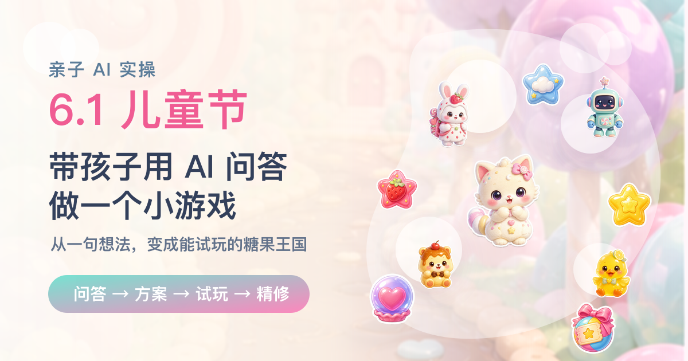
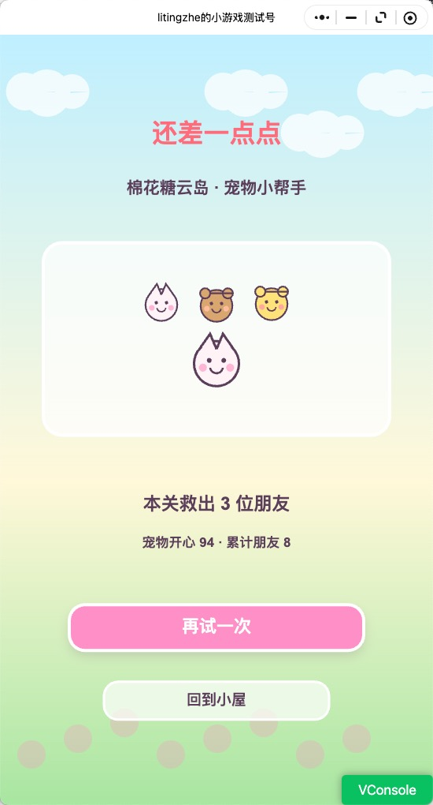
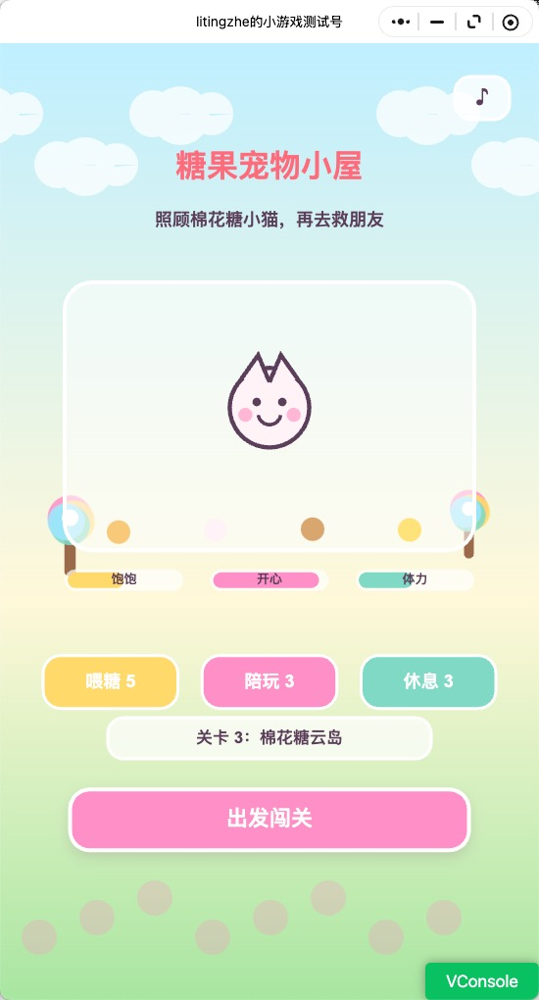
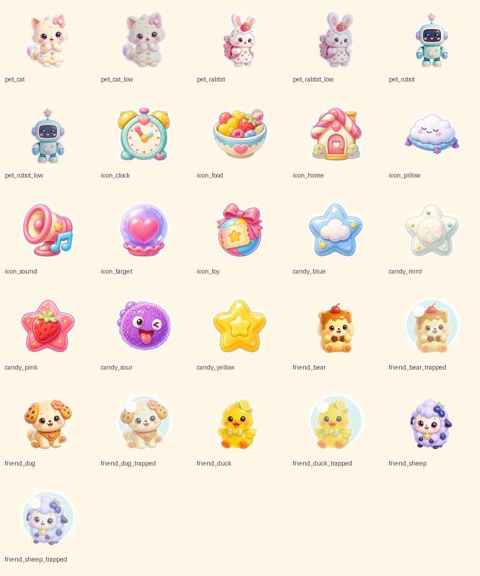
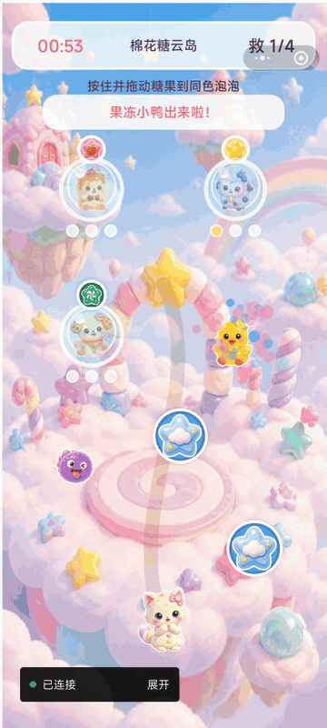

6.1 儿童节，带孩子用 AI 问答做一个小游戏

亲子 AI 实操 · 从孩子的想法到小游戏方案
关注微信公众号 AI技趣星球，一起用技术创造乐趣。
6.1 儿童节快到了。
很多家长会想着给孩子买个礼物，带孩子出去玩一趟，或者安排一顿好吃的。
这些当然都很好。
但今年你也可以试试另一件事：带孩子一起，用 AI 做一个只属于他的小游戏。
如果你也想照着试，难度大概是 ⭐⭐⭐。
需要一个 AI 聊天工具，加一个能写代码的 AI 工具。第一次可能会折腾一点，但整个过程很适合亲子一起玩。
我一开始也差点从工具下手
很多人一听“做游戏”，脑子里马上出现一堆词：
代码、引擎、素材、动画、上线、微信小游戏。
然后就开始头大。
其实带孩子做第一个小游戏，不应该先从工具开始。
它更像搭积木。
你得先问孩子：
“你想搭城堡，还是小动物的家？”
而不是一上来就问：
“我们用哪种高级积木拼接结构？”
孩子真正感兴趣的，往往不是技术。
是主角是谁、去哪里冒险、要救谁、会不会赢、好不好玩。
这次我做下来，最有用的不是先打开开发工具。
而是先把孩子脑子里的画面问出来。
第一步：先让孩子做选择，而不是让孩子“想一个游戏”
如果你直接问孩子：
“你想做什么游戏？”
很多孩子会愣住。
因为这个问题太大了。
更好的方式是给选项。
就像点餐一样。
你不问：
“你今天想吃什么宇宙级美食？”
你会问：
“面条、米饭、披萨，你想吃哪个？”
做游戏也一样。
我当时先让 AI 帮我准备了一组选择题：
我想在 6.1 儿童节带孩子一起做一个微信小游戏。
请你不要直接给方案，先帮我设计 7 个适合问孩子的问题。
要求：
- 每个问题都给 4 到 6 个选项
- 选项要适合 5 到 10 岁孩子理解
- 问题要覆盖游戏类型、主题、主角、每局时长、游戏目标、难度、是否需要排行榜
- 语气像家长在跟孩子聊天孩子选起来很快。
最后整理出来大概是这样：
孩子当然不会说“我要一个完整游戏设计文档”。
但这些答案已经足够做出一个方向：
糖果王国里，小动物用 1 分钟救朋友。游戏要简单，不要排行榜，不要广告。
比起一句“做个儿童节游戏”，这已经清楚很多。
第二步：让 AI 把孩子的话翻译成游戏方案
孩子的表达通常很可爱，但不会很完整。
比如他说：
“我要小动物救朋友。”
这里面还有很多空白：
- 怎么救？
- 救谁？
- 成功怎么算？
- 失败会怎样？
- 每一局玩什么？
- 回到首页能干什么？
这些问题，我没有自己硬想。
我把孩子的选择丢给 AI，让它先整理成方案：
下面是孩子选择出来的游戏方向：
1. 游戏类型：养成/照顾小动物
2. 主题：糖果王国
3. 主角：小动物
4. 单局时长：1 分钟
5. 游戏目标：救朋友
6. 难度：很简单
7. 不要排行榜、广告、分享
请帮我整理成一份儿童节微信小游戏方案。
要求：
- 面向 5 到 10 岁孩子
- 玩法要简单，但不能无聊
- 包含首页、游戏页、结算页
- 写清楚每一页有什么
- 写清楚玩家怎么赢
- 风格要 Q 萌、轻松、有趣整理完之后，方向就变成了：
- 首页：糖果宠物小屋
- 领养：小兔、小猫、小机器人
- 照顾：喂糖、陪玩、休息
- 闯关：把同色糖果拖给同色泡泡
- 目标：救出泡泡里的小动物朋友
- 奖励：获得糖果粮、玩具券、云朵枕
回头看，这有点像把孩子的“梦话”整理成菜单。
孩子只负责说想法。
大人负责判断能不能做。
AI 负责把它写成一份能继续往下走的方案。
第三步：先做“能玩的一小块”，不要贪大
家长很容易犯一个错：
刚开始想做一个小游戏，聊着聊着就变成：
“要不要加宠物成长？”
“要不要加 20 个关卡？”
“要不要加商店？”
“要不要加语音？”
最后孩子都困了，游戏还没开始。
第一版只做一小块就够。
比如：
- 先选一个宠物。
- 进入糖果王国。
- 拖动糖果去救一个朋友。
- 成功后回到小屋。
只要孩子能看到：
“这是我选的小动物。”
“它真的动起来了。”
“我救出了朋友。”
这件事就已经很有成就感。
我继续让 AI 把范围压小：
请把上面的游戏方案缩小成第一个可玩的版本。
要求：
- 只做 1 个完整关卡
- 只保留 3 个宠物选择
- 只保留 3 种照顾资源
- 不做登录、排行榜、广告、分享
- 用微信小游戏原生 Canvas 2D 实现
- 给我一份文件清单和开发顺序这里我踩到一个小点：
要不断提醒 AI：
“先做能玩的第一版。”
不然它很容易一上来就给你一堆宏大的系统。
孩子不会因为你写了 30 页架构设计而开心。
孩子会因为屏幕上的小兔被自己救出来而开心。
第四步：让孩子继续当“小评委”，问题一下就暴露了
第一版做出来后，千万别急着说：
“完成了。”
你可以把手机或电脑拿给孩子看，让他当评委。
问三个问题就够：
- 你觉得哪里好玩？
- 你觉得哪里不好看？
- 你还想加什么？
这三个问题，比很多专业评审都管用。
比如这次小游戏做出来后，最初版本只是“点糖果救泡泡”。
我拿给孩子看，很快就发现问题。
第一个问题不是代码。
是画面。
说是小猫，但孩子根本看不出动物特征。
它更像一个临时画出来的小符号。
小动物、图标、按钮都太潦草了。
这时候我才意识到，可能是我一开始给 AI 的上下文有问题。
我一直强调：
“这是带孩子一起玩的亲子项目。”
AI 很可能把它理解成：
“随便做个亲子小实验，能看就行。”
结果第一版就很像草稿，而不是一个认真小游戏的视觉效果。
老版本大概长这样：


除了画面，玩法也很快暴露问题：
没有什么养成感。
不像在照顾小动物。
游戏太简单，没什么可玩性。
于是方案继续改：
- 打开游戏先领养宠物。
- 宠物有饱饱、开心、体力。
- 照顾宠物需要消耗资源。
- 资源来自每天补给和闯关奖励。
- 关卡从点击变成拖拽匹配。
- 错了会扣时间，增加一点点挑战。
- 图片资源也重新生成，明确要求商用品质、统一风格、不要 demo 感。
这一轮之后，我对“带孩子一起做”这件事的感觉变了。
不是大人做好一个东西丢给孩子玩。
而是孩子真的能参与判断。
他的反馈，会改变下一版长什么样。
第五步：改方案时，也要把素材标准一起改
这次最重要的经验是：
改玩法的时候，别只改代码。
素材标准也要一起改。
因为“可爱”这个词太宽了。
你说可爱，AI 可能给你一张儿童涂鸦。
你说 Q 萌，AI 可能给你一个临时贴纸。
但如果你想让它像一个认真小游戏，就要把标准说清楚。
后来我把素材要求改成了：
请为儿童向微信小游戏生成一套可商用质感的 Q 萌糖果玩具风视觉资产。
要求：
- 商用品质，不要 demo 感，不要线稿占位图
- 统一风格，适合 5 到 10 岁孩子
- 软糖、玩具、棉花糖质感
- 角色要有圆润轮廓、明亮眼神、柔和高光
- 图标要像真实游戏 UI 资产，而不是简单符号
- 每个素材都要透明背景，方便直接放进游戏
- 包含宠物、低状态宠物、救援朋友、泡泡状态、糖果、资源图标、HUD 图标我后来反复加的关键词是：
商用品质、统一风格、不要 demo 感、真实游戏 UI 资产、透明背景。
加上这些要求后，素材效果才明显变好。
新的资源图是这样：

再把这些资源接进游戏里，最终版就比老版本完整很多：

它当然还谈不上完整。
但孩子能看见自己的想法，真的在屏幕里跑起来了。
下次我再写素材提示词，不会只写“可爱”。
我会把这些话一起写进去：
- 是儿童绘本可爱，还是手游图标可爱。
- 是草稿验证，还是准备发布。
- 是随便画一个，还是要统一成一套素材。
- 是白底展示，还是透明背景直接进游戏。
这次给我的意外收获
做完这个小游戏，我反而觉得它最像一次小型练习。
不是练怎么写一个多厉害的游戏。
而是练怎么把一个模糊想法往前推：
- 先问清楚。
- 再整理成方案。
- 做一个很小的版本。
- 拿到反馈。
- 再改下一版。
后来我发现，这不只是在做游戏时有用。
写文章、做活动、准备课程、整理旅行计划，也能用。
我现在越来越觉得，AI 最实用的地方不是“替我一口气做完”。
而是把一件原本不知道怎么开始的事，拆成几个可以继续往下走的小步骤。
如果你也想试试，可以今晚拿 20 分钟做个小实验。
打开 AI，把下面这段话发给它：
我想带孩子一起为 6.1 儿童节创作一个小游戏。
请你像亲子活动主持人一样，先问我 7 个选择题。
每题都要适合孩子回答。
问题要覆盖：游戏类型、主题、主角、单局时长、游戏目标、难度、要不要排行榜或分享。
等我回答后，再帮我整理成一个简单、可爱的小游戏方案。
如果需要生成素材，请提醒我加入：商用品质、统一风格、不要 demo 感、透明背景。我这次最大的感受是，做游戏的第一步真的不是写代码。
是坐下来，认真听孩子说：
“我想让小动物去糖果王国救朋友。”